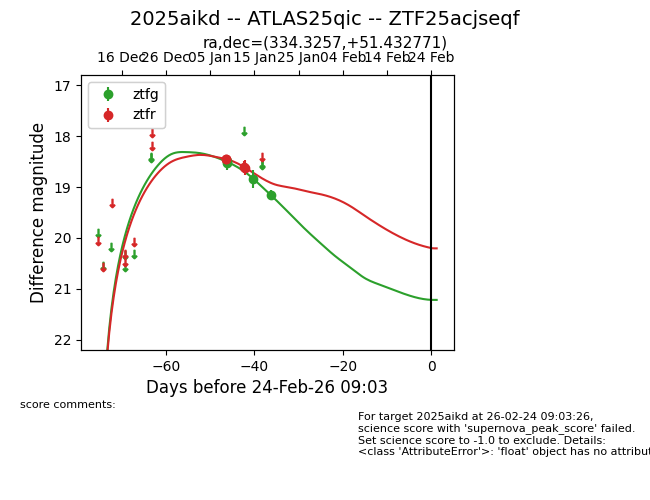
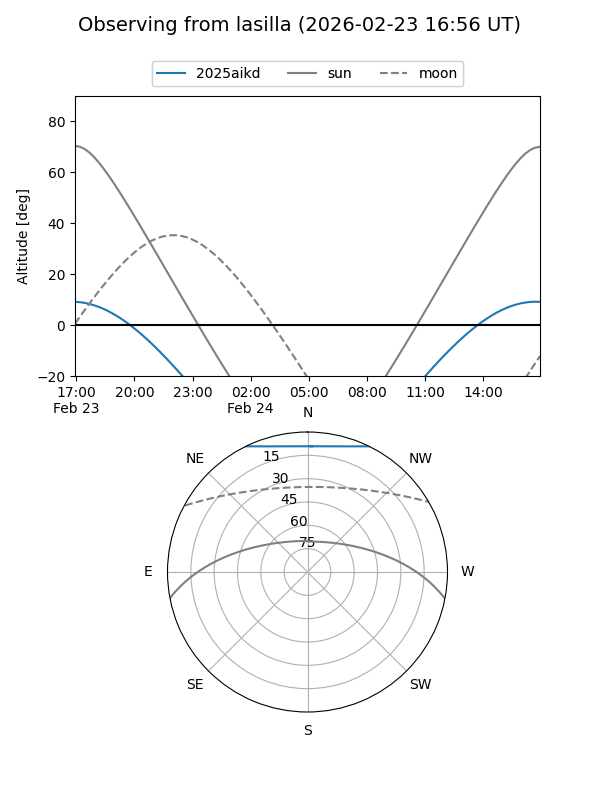
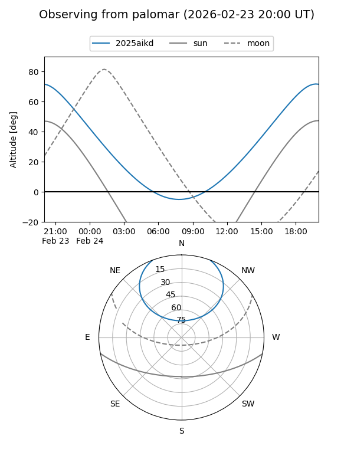
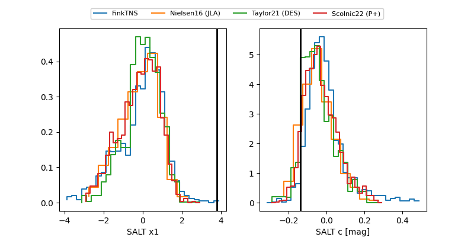

2025aikd
Target 2025aikd at 2026-01-19 03:21
Aliases and brokers:
FINK: link
Lasair: link
ALeRCE: link
TNS: link
YSE: link
alt names
ZTF25acjseqf (ztf,fink_ztf)
2025aikd (tns,yse)
ATLAS25qic (atlas)
Coordinates:
equatorial (ra, dec) = 334.3257,+51.43277
equatorial (HMS+DMS) = 22:17:18.17,+51:25:57.97
galactic (l, b) = (100.0051,-4.44495)
Flags:
Photometry:
last ztfg=19.16, ztfr=18.62
4 ztfg, 4 ztfr detections
Lightcurve

Visibility


Additional plots
